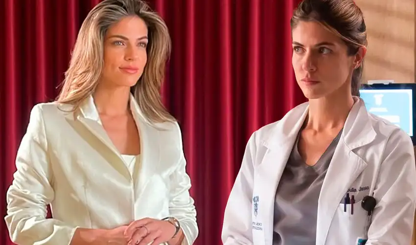

Magaly Medina tras declaraciones de Pamela Franco y Melanie Martínez: "Es quitarle la careta a Christian Domínguez ante Karla Tarazona"
Carlos Alcántara volvió a robarse todas las miradas. Esta vez, el escenario fue la boda de su hijo mayor, Gianfranco Alcántara. A través de su cuenta de Instagram, el popular 'Cachín' compartió algunos momentos de la íntima celebración, donde dejó ver detalles de la fiesta.

Perú es clave señala una frase que se ha hecho viral en redes sociales y tienen toda la razón. Los talentos peruanos de exportación continúan dejando el nombre del país en alto, tal es el caso de la a actriz Stephanie Cayo, quien interpreta a la doctora Julia Jasso en la serie "Doc" la cual se ha convertido en una de las más vistas a nivel de Latinoamérica.